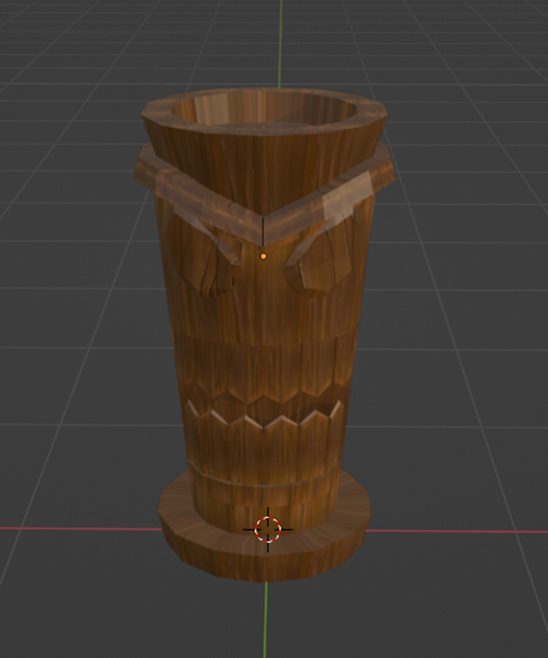
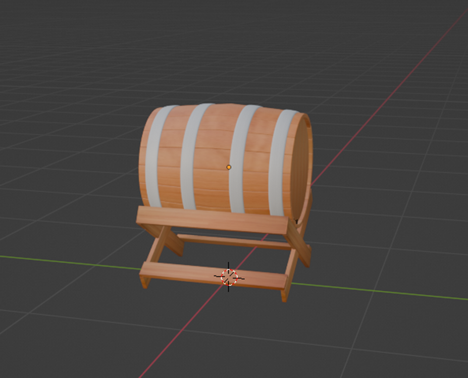

Greetings Guardians!
Tired of the same old three towers?
Be ready to shake things up and bring some fresh strategies to the battlefield!
I'm excited to announce two new additions to the Guardian's arsenal!
The Guardian Totem and the Poison Barrel
Each of these comes with unique mechanics to spice up your gameplay and introduce new strategies to your defenses.
Guardian Totem
Think of the Guardian Totem as the ultimate team player.
It doesn't deal damage directly but instead boosts all nearby towers' stats.
Need more firepower from your cannon? Or maybe you want to increase the health of your stone walls?
Guardian Totem has you covered!

Guardian Totem in Blender
Poison Barrel
Have you ever wondered how to deal with hordes of enemies that are too overwhelming for your cannons to handle?
The Poison Barrel is here to help!
This tower specializes in area-of-effect over time damage, making it the perfect solution for larger groups of enemies.
With the right placement, you can stack multiple Poison Barrels on top of each other to create an unpierceable wall of poison!
Be careful though, the Poison Barrel range is limited so it almost always needs to be placed directly on the track, making it a perfect target for enemy units.

Poison Barrel in Blender
See you on the battlefield Guardians!
Ondrej Janousek
Lead Developer of Fortress Guardian